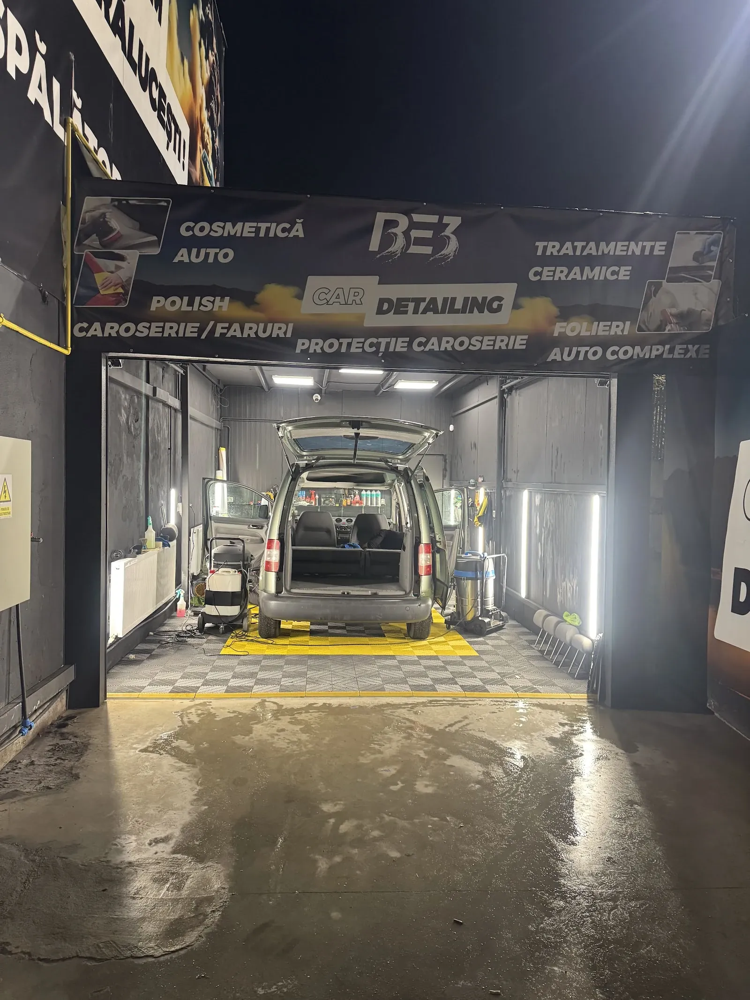
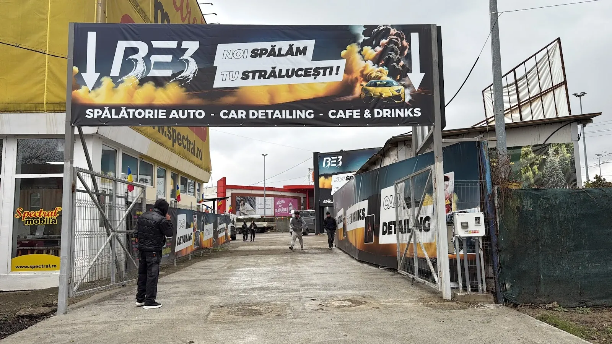
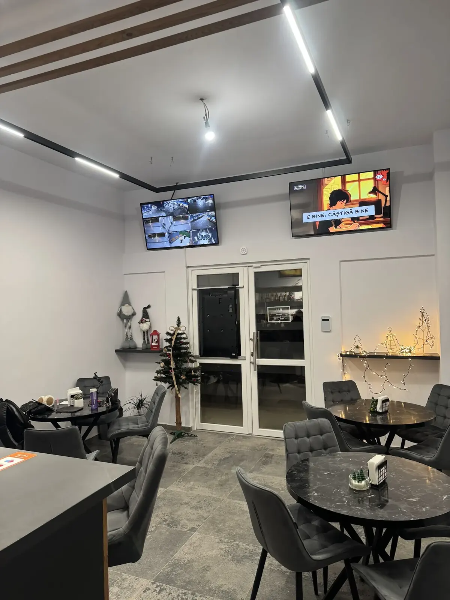
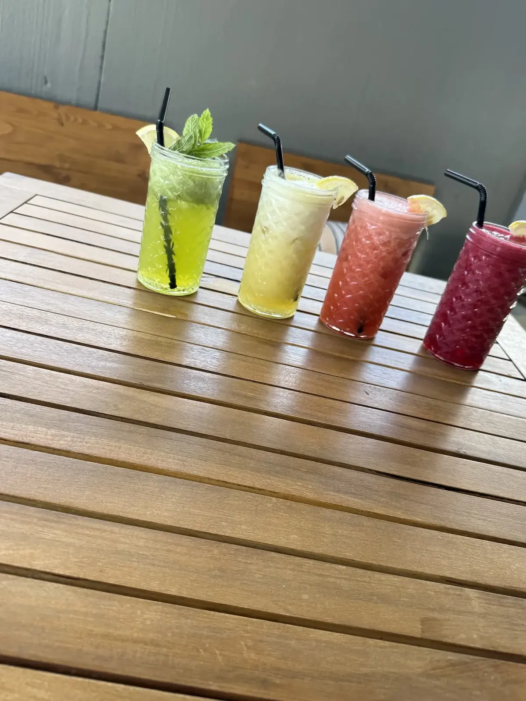
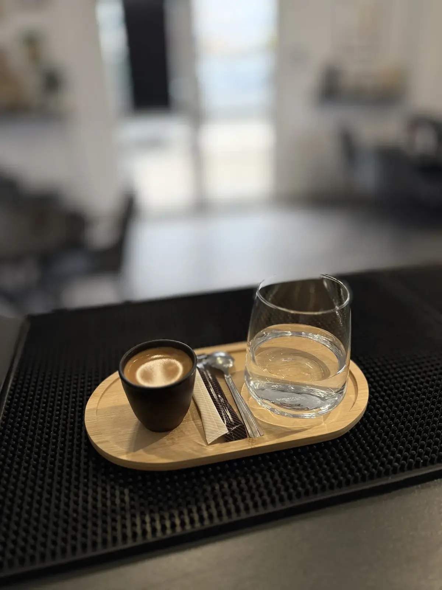

{{Strada Bucium · Baza 3 · Iași|Strada Bucium · Baza 3 · Iași|Strada Bucium · Baza 3 · Iași}}
{{Noi spălăm.|We wash.|Nós lavamos.}}{{Tu strălucești.|You shine.|Você brilha.}}
{{Spălătorie auto, car detailing și o cafenea în același loc. Lași mașina la spălat sau la polish și aștepți la un espresso sau o limonadă.|A car wash, car detailing and a cafe in one place. Leave the car for a wash or a polish and wait over an espresso or a lemonade.|Lavagem auto, car detailing e um café no mesmo sítio. Deixa o carro a lavar ou a polir e espera com um espresso ou uma limonada.}}
4,7{{36 de recenzii pe Google|36 Google reviews|36 avaliações no Google}}

{{spălătorie · car detailing|car wash · car detailing|lavagem · car detailing}}
{{De la praf la luciu.|From dust to gloss.|Do pó ao brilho.}}
{{Pe bannerul boxei scrie tot ce facem. Alege serviciul și îl trecem în programare; prețul îl afli la telefon, după ce ne spui mașina.|Everything we do is written on the banner over the bay. Pick a service and it goes into your booking; you get the price on the phone once you tell us the car.|Tudo o que fazemos está escrito na faixa da box. Escolha o serviço e ele entra na marcação; o preço fica a saber ao telefone, depois de dizer o carro.}}
{{Spălătorie|Car wash|Lavagem}}
{{Car detailing|Car detailing|Car detailing}}

{{Spălătorie auto, car detailing, cafe & drinks: așa scrie pe poarta de pe Strada Bucium.|Car wash, car detailing, cafe & drinks: that’s what the gate on Strada Bucium says.|Lavagem auto, car detailing, café e bebidas: é o que diz o portão na Strada Bucium.}}
{{cafe & drinks|cafe & drinks|café e bebidas}}
{{Cât se spală mașina, tu stai la cafea.|While the car gets washed, you have a coffee.|Enquanto o carro é lavado, você toma um café.}}



{{Sala de așteptare are mese, televizor și un espressor cu trei grupuri. Meniul complet și prețurile le confirmăm la telefon.|The waiting room has tables, a TV and a three-group espresso machine. The full menu and prices are confirmed on the phone.|A sala de espera tem mesas, televisão e uma máquina de espresso de três grupos. A carta completa e os preços confirmam-se ao telefone.}}
{{ce spun clienții|what customers say|o que dizem os clientes}}
{{Lași mașina cu încredere.|Leave the car with confidence.|Deixe o carro com confiança.}}
{{din 36 de recenzii pe Google|from 36 Google reviews|em 36 avaliações no Google}}
{{Personal amabil și atent la detalii; mașina a ieșit curată impecabil, pe interior și pe exterior.|Friendly staff who pay attention to detail; the car came out spotless, inside and out.|Pessoal simpático e atento ao detalhe; o carro saiu impecável, por dentro e por fora.}}
{{Andreea D. · pe scurt, din Google|Andreea D. · summarised, from Google|Andreea D. · em resumo, do Google}}{{O spălătorie unde îți lași mașina cu încredere. Servicii de calitate.|A car wash where you can leave your car with confidence. Quality service.|Uma lavagem onde deixa o carro com confiança. Serviço de qualidade.}}
{{Paula L. · pe scurt, din Google|Paula L. · summarised, from Google|Paula L. · em resumo, do Google}}{{Primești exact ce aștepți când duci mașina la spălat.|You get exactly what you expect when you take the car for a wash.|Recebe exatamente o que espera quando leva o carro a lavar.}}
{{client · pe scurt, din Google|customer · summarised, from Google|cliente · em resumo, do Google}}{{Echipa Be3 răspunde la fiecare recenzie: „Ne mândrim cu atenția la detalii.”|The Be3 team answers every review: “We take pride in attention to detail.”|A equipa Be3 responde a cada avaliação: «Orgulhamo-nos da atenção ao detalhe.»}}
{{programare|booking|marcação}}
{{Trei alegeri și ai ora.|Three choices and you have a slot.|Três escolhas e tem a hora.}}
{{Serviciul, mașina, ziua. Cererea pleacă pe WhatsApp sau SMS către Be3, iar ora exactă o confirmăm noi.|The service, the car, the day. The request goes to Be3 by WhatsApp or SMS and we confirm the exact time.|O serviço, o carro, o dia. O pedido segue para a Be3 por WhatsApp ou SMS e nós confirmamos a hora exata.}}
{{Prețul depinde de mașină și de serviciu: ți-l spunem când confirmăm ora.|The price depends on the car and the service: we tell you when we confirm the time.|O preço depende do carro e do serviço: dizemos-lho quando confirmarmos a hora.}} {{prețuri: de confirmat|prices: to be confirmed|preços: a confirmar}}
{{unde ne găsești|where to find us|onde nos encontrar}}
{{Strada Bucium, la Baza 3.|Strada Bucium, at Baza 3.|Strada Bucium, na Baza 3.}}
- Strada Bucium, 700182 Iași{{Lângă stația Baza 3, pe partea cu centrul comercial Felicia.|Next to the Baza 3 stop, on the Felicia shopping centre side.|Junto à paragem Baza 3, do lado do centro comercial Felicia.}}
- {{Poarta cu bannerul BE3|The gate with the BE3 banner|O portão com a faixa BE3}}{{„Noi spălăm, tu strălucești!”, cu mașina galbenă în fum.|“We wash, you shine!”, with the yellow car in the smoke.|«Nós lavamos, você brilha!», com o carro amarelo no fumo.}}
- 0730 304 126{{Program: de confirmat · sună înainte să vii.|Hours: to be confirmed · call before you come.|Horário: a confirmar · ligue antes de vir.}}
{{Sună · 0730 304 126|Call · 0730 304 126|Ligar · 0730 304 126}}
{{Deschide în Google Maps|Open in Google Maps|Abrir no Google Maps}}
{{Cod Plus: 4JW5+GW Iași · intrare accesibilă pentru scaun cu rotile.|Plus Code: 4JW5+GW Iași · wheelchair-accessible entrance.|Plus Code: 4JW5+GW Iași · entrada acessível a cadeira de rodas.}}